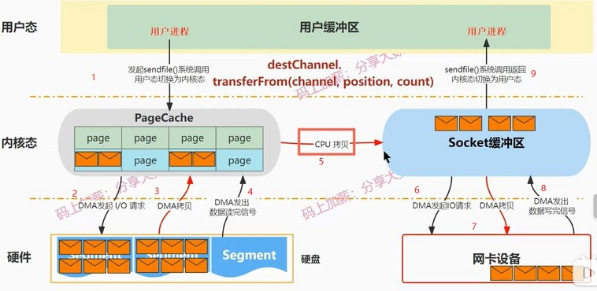

Index 中的mmap #
在 AbstractIndex 中，这个 MappedByteBuffer 就是名为 mmap 的变量。 接下来，我用注释的方式，带你深入了解下这个 mmap 的主要流程。
@volatile protected var mmap: MappedByteBuffer = {
// 第1步：创建索引文件
val newlyCreated = file.createNewFile()
// 第2步：以writable指定的方式（读写方式或只读方式）打开索引文件
val raf = if (writable) new RandomAccessFile(file, "rw") else new Rando
try {
if(newlyCreated) {
if(maxIndexSize < entrySize) // 预设的索引文件大小不能太小，如果连一个索引
throw new IllegalArgumentException("Invalid max index size: " + m
// 第3步：设置索引文件长度，roundDownToExactMultiple计算的是不超过maxInde
// 比如maxIndexSize=1234567，entrySize=8，那么调整后的文件长度为1234560
raf.setLength(roundDownToExactMultipl
这些代码最主要的作用就是创建 mmap 对象。AbstractIndex 其他大部分的操作都是和 mmap 相关。
AbstractIndex：这是 Kafka 所有类型索引的抽象父类，里面的 mmap 变量是实现索引机制的核心。
mmap+write [4][5] #
- 4次context切换

消费者中的sendfile() [6] #

- kafka的mmap是对写的优化，还是读的优化？
参考 #
-
{% post_link ‘zeroCopy’ %} self
-
Kafka Zero-Copy 使用分析 transferTo() 未